lorenz_partial_100d_7lat_additive_mse_uniform_obsnoise005__lc_sweepProject: Lorenz_INDpartial_N100_D1_NormTrue_T7__JacobianODE
Launched: 2026-04-16T05:56:04Z
Completed: 2026-04-16T11:50:14Z
Outcome: complete_clean
Git: latent-JacobianODE @ 4b6bc1f
Expected runs: 9
lorenz_partial_100d_7lat_additive_mse_uniformDescription
Same as lorenz_partial_100d_7lat_additive_mse except reconstruction_mode='uniform' so training loss is scored on the full 100-D delay-embedded state at every step of the prediction_steps=10 horizon (val monitor still most_recent). obs_noise_scale=0 fixed; LC weight swept.
Hypothesis
100→7 with most_recent recon under-contracted the spectrum at the non-p30 horizon. Uniform recon at the same horizon forces z_dyn to be a proper Takens chart of the attractor rather than just enough to reconstruct the current frame, which should concentrate the real contraction into a single axis (λ closer to empirical ~-14) and make the extra transverse directions contract rapidly. Serves as a p10 reference to compare against the p30 version.
Success criteria
Swept axes (1): training.lightning.loop_closure_weight
Chosen run (by best_traj_loss): 4h82lv4v — traj_loss=0.00525, MASE=0.7783, R²=0.9858, LC loss=1.557, epoch=127.0
Swept-axis values at chosen run: training.lightning.loop_closure_weight=1.0e-05
Runs analyzed: 9 (expected 9)
| run_idx | run_id | training.lightning.loop_closure_weight |
best_traj_loss | best_MASE | R² | LC loss | epoch |
|---|---|---|---|---|---|---|---|
| 2 | 4h82lv4v |
1.0e-05 | 0.00525 | 0.7783 | 0.9858 | 1.557 | 127.0 |
| 1 | hcai47of |
1.0e-06 | 0.00525 | 0.7786 | 0.9858 | 8.980 | 127.0 |
| 0 | 1dc6pbmm |
0 | 0.00538 | 0.7852 | 0.9854 | 375.966 | 102.0 |
| 5 | tthjlvoy |
0.01 | 0.00544 | 0.7881 | 0.9852 | 0.002 | 150.0 |
| 4 | xit7r44p |
0.001 | 0.00544 | 0.7896 | 0.9853 | 0.025 | 133.0 |
| 3 | hp642zyz |
1.0e-04 | 0.00565 | 0.7958 | 0.9846 | 0.258 | 93.0 |
| 6 | 4i62yjy8 |
0.1 | 0.00601 | 0.8145 | 0.9837 | 0.000 | 139.0 |
| 7 | 9yyrp800 |
1 | 0.00660 | 0.8426 | 0.9821 | 0.000 | 174.0 |
| 8 | nnhboy20 |
10 | 0.00763 | 0.8987 | 0.9793 | 0.000 | 140.0 |
| Criterion | Verdict | Note |
|---|---|---|
| λ_min near empirical ~-14 at some LC | Unknown | |
| Σλ_i within ~30% of empirical ~-13.7 | Unknown | |
| val/trajectory_r2 > 0.9 at best LC | Pass | Best R² = 0.9858; threshold > 0.9 |
| No loop-closure explosion under uniform training | Unknown |
Automated verdicts use simple numeric-threshold parsing and may mis-classify qualitative criteria. The Discussion section below takes precedence.
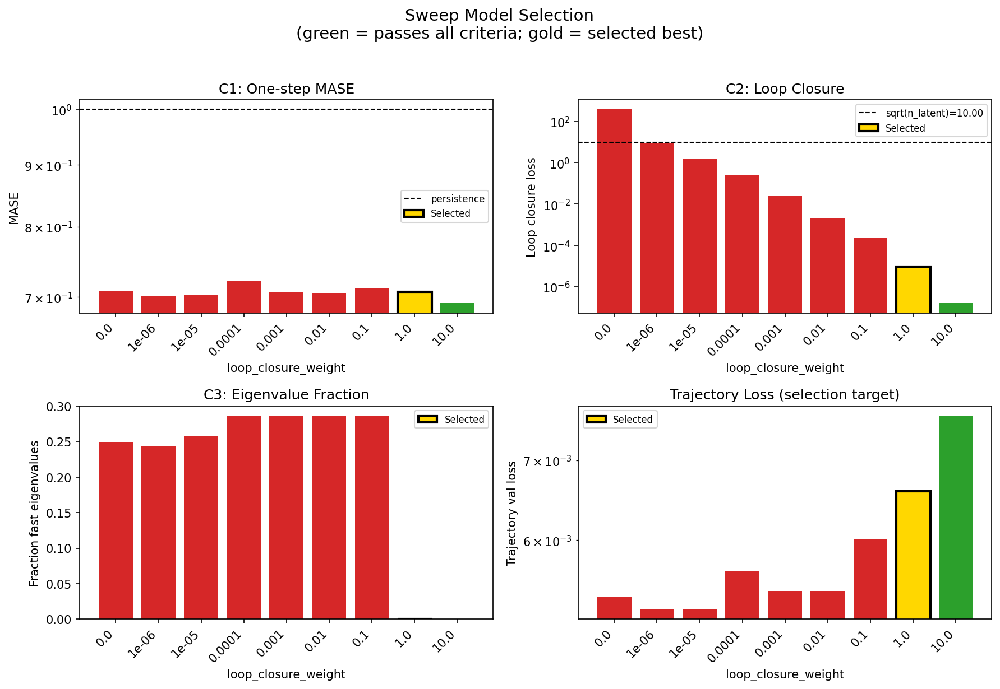
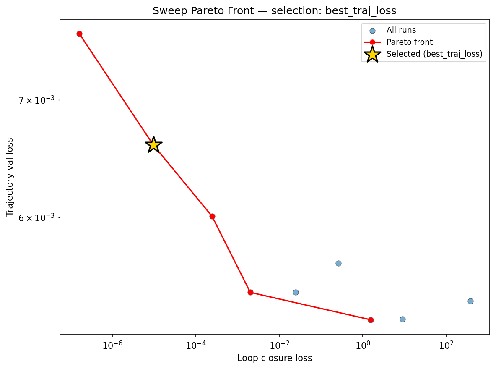
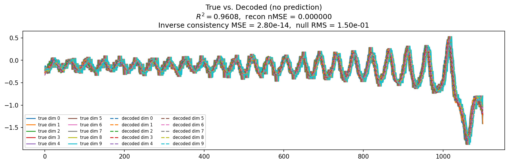
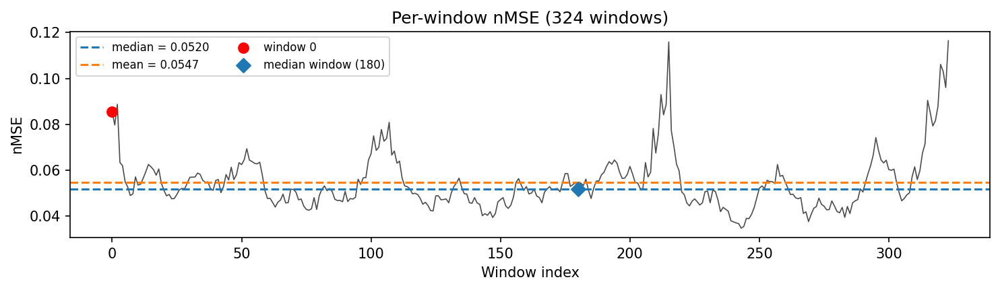
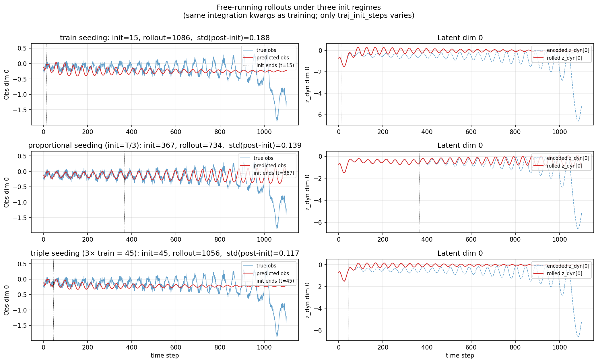
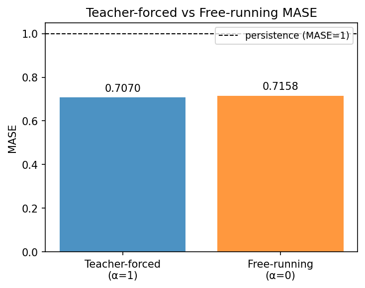
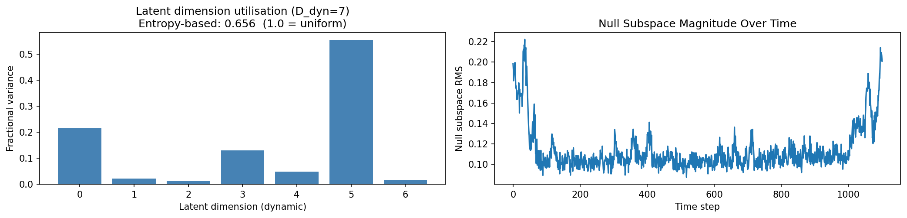
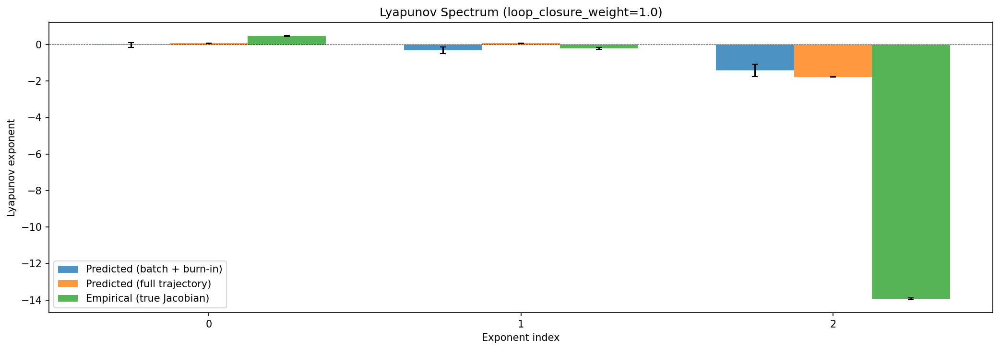
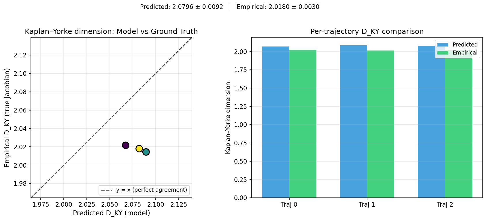
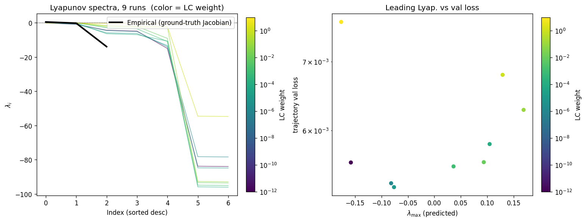
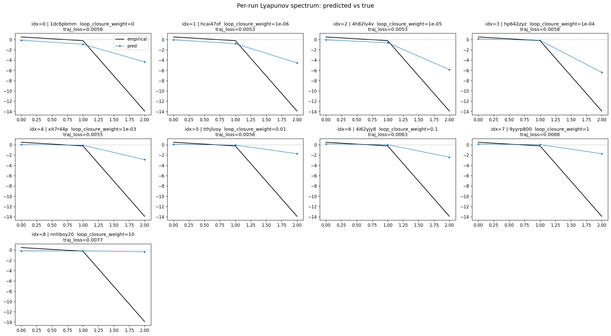
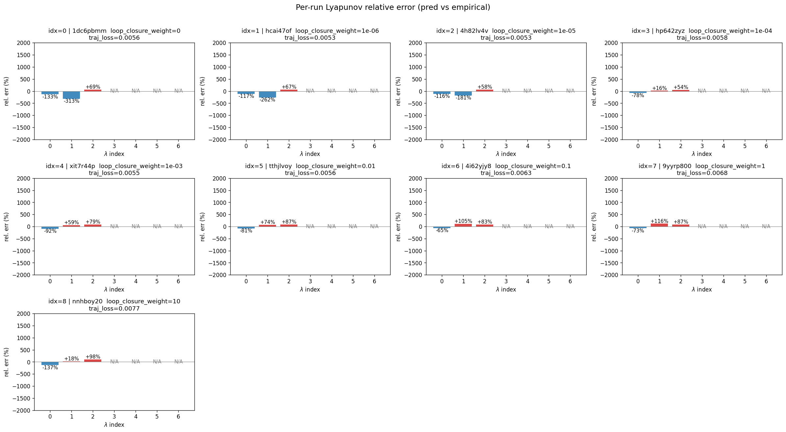
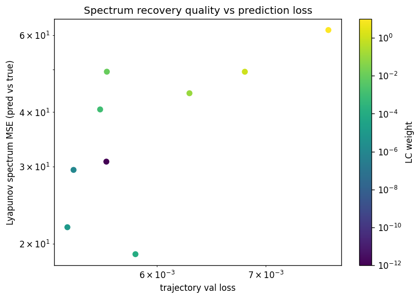
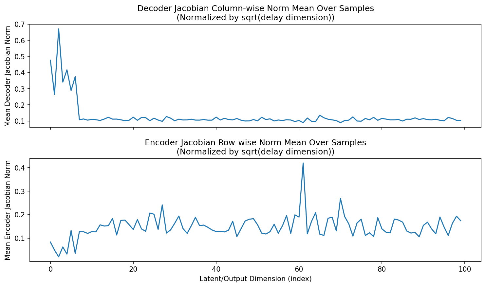
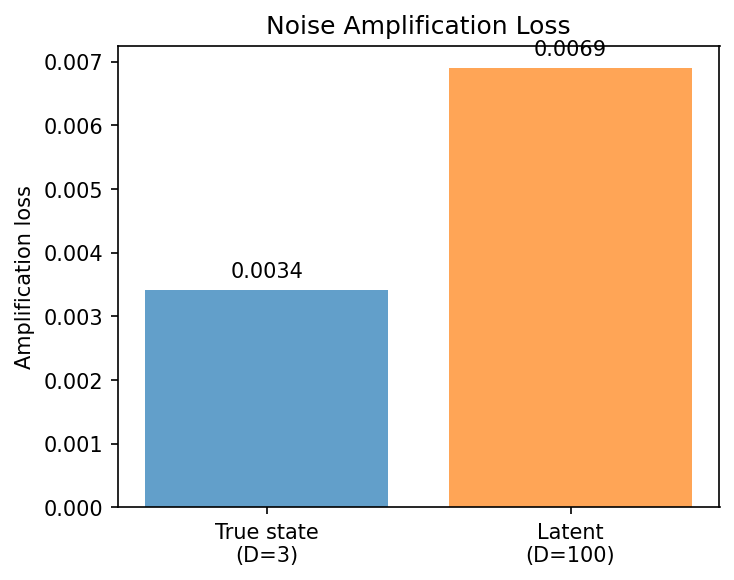
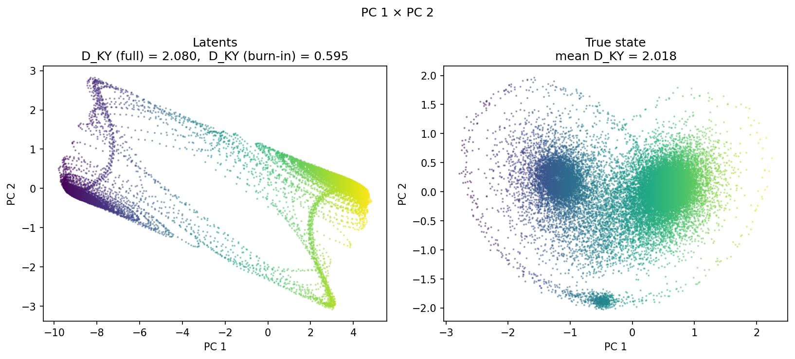
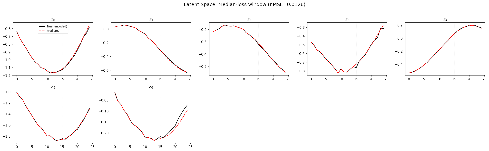
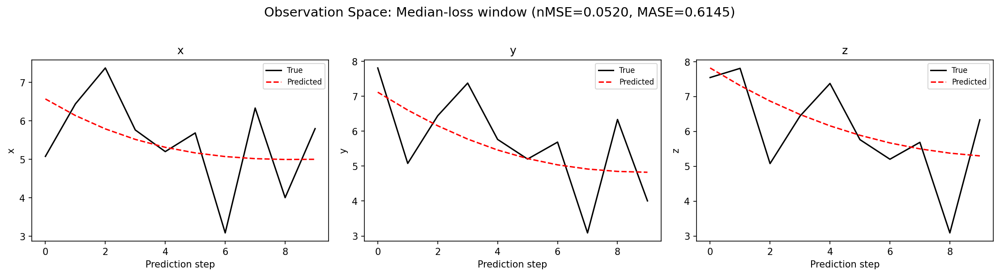
(to be written)
run_analytics stdoutrun_analyticsNo run_id provided — selecting best run from group 'lorenz_partial_100d_7lat_additive_mse_uniform_obsnoise005__lc_sweep' ...
Found 9 total runs in JacobianODE/Lorenz_INDpartial_N100_D1_NormTrue_T7__JacobianODE (group=lorenz_partial_100d_7lat_additive_mse_uniform_obsnoise005__lc_sweep)
All runs (state, loop_closure_weight, tangent_entropy_weight, kl_dyn_weight):
1dc6pbmm: state=finished, lc=0.0, te=0.0, kl_dyn=0.0
hcai47of: state=finished, lc=1e-06, te=0.0, kl_dyn=0.0
4h82lv4v: state=finished, lc=1e-05, te=0.0, kl_dyn=0.0
hp642zyz: state=finished, lc=0.0001, te=0.0, kl_dyn=0.0
xit7r44p: state=finished, lc=0.001, te=0.0, kl_dyn=0.0
tthjlvoy: state=finished, lc=0.01, te=0.0, kl_dyn=0.0
4i62yjy8: state=finished, lc=0.1, te=0.0, kl_dyn=0.0
9yyrp800: state=finished, lc=1.0, te=0.0, kl_dyn=0.0
nnhboy20: state=finished, lc=10.0, te=0.0, kl_dyn=0.0
slurm_timeout_min not found in any run config — falling back to 180 min
Including 1dc6pbmm (lc=0.0): use_all_runs=True (state=finished)
Including hcai47of (lc=1e-06): use_all_runs=True (state=finished)
Including 4h82lv4v (lc=1e-05): use_all_runs=True (state=finished)
Including hp642zyz (lc=0.0001): use_all_runs=True (state=finished)
Including xit7r44p (lc=0.001): use_all_runs=True (state=finished)
Including tthjlvoy (lc=0.01): use_all_runs=True (state=finished)
Including 4i62yjy8 (lc=0.1): use_all_runs=True (state=finished)
Including 9yyrp800 (lc=1.0): use_all_runs=True (state=finished)
Including nnhboy20 (lc=10.0): use_all_runs=True (state=finished)
Found 9 effectively-done sweep runs:
loop_closure_weight=0.0, tangent_entropy_weight=0.0, kl_dyn_weight=0.0 -> run_id=1dc6pbmm
loop_closure_weight=1e-06, tangent_entropy_weight=0.0, kl_dyn_weight=0.0 -> run_id=hcai47of
loop_closure_weight=1e-05, tangent_entropy_weight=0.0, kl_dyn_weight=0.0 -> run_id=4h82lv4v
loop_closure_weight=0.0001, tangent_entropy_weight=0.0, kl_dyn_weight=0.0 -> run_id=hp642zyz
loop_closure_weight=0.001, tangent_entropy_weight=0.0, kl_dyn_weight=0.0 -> run_id=xit7r44p
loop_closure_weight=0.01, tangent_entropy_weight=0.0, kl_dyn_weight=0.0 -> run_id=tthjlvoy
loop_closure_weight=0.1, tangent_entropy_weight=0.0, kl_dyn_weight=0.0 -> run_id=4i62yjy8
loop_closure_weight=1.0, tangent_entropy_weight=0.0, kl_dyn_weight=0.0 -> run_id=9yyrp800
loop_closure_weight=10.0, tangent_entropy_weight=0.0, kl_dyn_weight=0.0 -> run_id=nnhboy20
n_dims=100, n_latent=100, n_dyn=7, dt=0.0150
run=1dc6pbmm: DiagnosticMetrics(one_step_mase=0.707763135433197, loop_closure_loss=375.9659118652344, fast_eigenvalue_fraction=0.2492857128381729, trajectory_val_loss=0.005376506596803665) (from cache, n_batches=100)
run=hcai47of: DiagnosticMetrics(one_step_mase=0.7009849548339844, loop_closure_loss=8.979778289794922, fast_eigenvalue_fraction=0.24285714328289032, trajectory_val_loss=0.005251006688922644) (from cache, n_batches=100)
run=4h82lv4v: DiagnosticMetrics(one_step_mase=0.7029179334640503, loop_closure_loss=1.5565879344940186, fast_eigenvalue_fraction=0.25785714387893677, trajectory_val_loss=0.005246102809906006) (from cache, n_batches=100)
run=hp642zyz: DiagnosticMetrics(one_step_mase=0.7210924625396729, loop_closure_loss=0.25814926624298096, fast_eigenvalue_fraction=0.2857142984867096, trajectory_val_loss=0.005649568047374487) (from cache, n_batches=100)
run=xit7r44p: DiagnosticMetrics(one_step_mase=0.7073301076889038, loop_closure_loss=0.02472049556672573, fast_eigenvalue_fraction=0.2857142984867096, trajectory_val_loss=0.005440260283648968) (from cache, n_batches=100)
run=tthjlvoy: DiagnosticMetrics(one_step_mase=0.7055831551551819, loop_closure_loss=0.0020117268431931734, fast_eigenvalue_fraction=0.2857142984867096, trajectory_val_loss=0.005438248626887798) (from cache, n_batches=100)
run=4i62yjy8: DiagnosticMetrics(one_step_mase=0.712566077709198, loop_closure_loss=0.00024421935086138546, fast_eigenvalue_fraction=0.2857142984867096, trajectory_val_loss=0.006008225027471781) (from cache, n_batches=100)
run=9yyrp800: DiagnosticMetrics(one_step_mase=0.7070409059524536, loop_closure_loss=9.579030120221432e-06, fast_eigenvalue_fraction=0.0, trajectory_val_loss=0.006596482824534178) (from cache, n_batches=100)
run=nnhboy20: DiagnosticMetrics(one_step_mase=0.691860556602478, loop_closure_loss=1.608309929679308e-07, fast_eigenvalue_fraction=0.0, trajectory_val_loss=0.007632751949131489) (from cache, n_batches=100)
Ranking method: best_traj_loss
Best run ID: 9yyrp800
Best loop_closure_weight: 1.0
Best tangent_entropy_weight: 0.0
Best kl_dyn_weight: 0.0
Best traj loss: 0.006596
Criteria applied: ['C1', 'C2', 'C3']
Surviving: 2 / 9
Auto-selected run_id: 9yyrp800
======================================================================
PARETO FRONTIER RUNS (5 runs)
======================================================================
Run ID LC Loss Traj Val Loss
------------ -------------- --------------
nnhboy20 0.000000 0.007633
9yyrp800 0.000010 0.006596 <-- selected
4i62yjy8 0.000244 0.006008
tthjlvoy 0.002012 0.005438
4h82lv4v 1.556588 0.005246
======================================================================
RANKING METHOD COMPARISON (over 2 survivors)
======================================================================
Method Run ID LC Loss Traj Val Loss
---------------------- ------------ -------------- --------------
best_traj_loss 9yyrp800 0.000010 0.006596 <-- active
pareto_knee nnhboy20 0.000000 0.007633
geo_rank 9yyrp800 0.000010 0.006596
minimax_rank 9yyrp800 0.000010 0.006596
geo_log_score 9yyrp800 0.000010 0.006596
minimax_log_score nnhboy20 0.000000 0.007633
======================================================================
Loading run 9yyrp800 from JacobianODE/Lorenz_INDpartial_N100_D1_NormTrue_T7__JacobianODE ...
Train dataset shape: torch.Size([23672, 25, 100])
Validation dataset shape: torch.Size([7532, 25, 100])
Test dataset shape: torch.Size([3228, 25, 100])
Train trajectories dataset shape: torch.Size([22, 1101, 100])
Validation trajectories dataset shape: torch.Size([7, 1101, 100])
Test trajectories dataset shape: torch.Size([3, 1101, 100])
Loading checkpoint epoch=174-step=35000.ckpt...
Computing reconstruction ...
Computing MASE ...
Teacher-forced MASE: 0.7070
Free-running MASE: 0.7158
Computing latent utilization ...
Entropy-based utilization: 0.656
Null subspace mean RMS: 1.154294e-01
Computing Lyapunov exponents ...
Computing full-trajectory Lyapunov (3 test trajs, T=1101) ...
Predicted Lyapunov exponents (batch+burn-in, 128 windowed trajs):
λ_1 = -0.0337 ± 0.1365
λ_2 = -0.3224 ± 0.1874
λ_3 = -1.4201 ± 0.3514
λ_4 = -2.1043 ± 0.1968
λ_5 = -2.4601 ± 0.1867
λ_6 = -54.2316 ± 0.0161
λ_7 = -54.6804 ± 0.0166
Predicted Lyapunov exponents (full-length, 3 test trajs):
λ_1 = +0.0726 ± 0.0105
λ_2 = +0.0690 ± 0.0107
λ_3 = -1.7770 ± 0.0182
λ_4 = -2.1376 ± 0.0324
λ_5 = -2.2404 ± 0.0285
λ_6 = -54.5470 ± 0.0011
λ_7 = -54.6819 ± 0.0008
Empirical Lyapunov exponents (mean ± std):
λ_1 = +0.4677 ± 0.0259
λ_2 = -0.2173 ± 0.0549
λ_3 = -13.9174 ± 0.0513
Mean KY dim (predicted): 2.080 ± 0.009
Mean KY dim (empirical): 2.018 ± 0.003
Mean KY dim (burn-in): 0.595 ± 0.715
Computing prediction windows ...
Windows: 324 — nMSE min=0.0348, median=0.0520, mean=0.0547, max=0.1164
Computing long-trajectory free-running rollouts ...
Computing encoder/decoder Jacobians ...
encoder_jacobian: (128, 100, 100)
decoder_jacobian: (128, 100, 100)
Computing amplification loss ...
Amplification loss — True state: 0.003415
Amplification loss — Latent: 0.006906